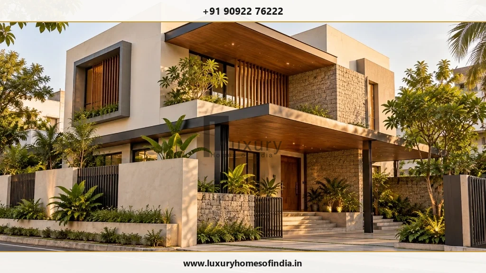
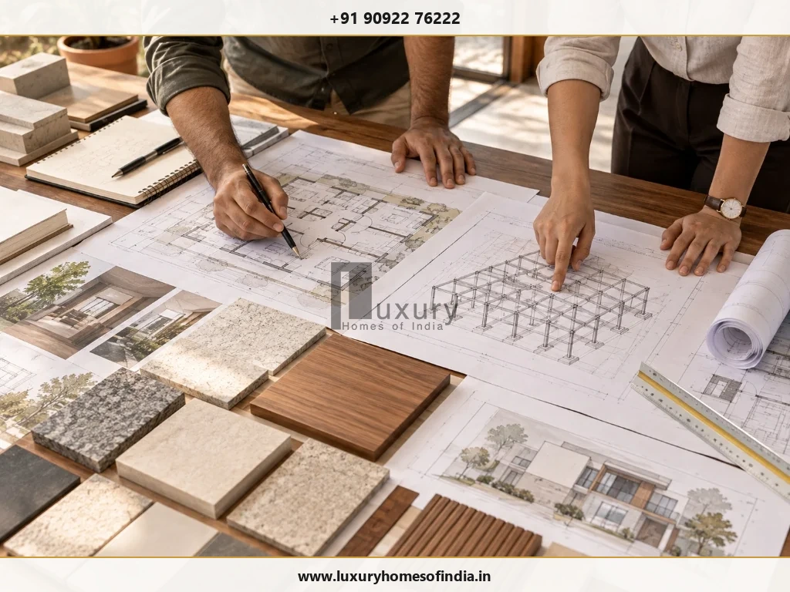
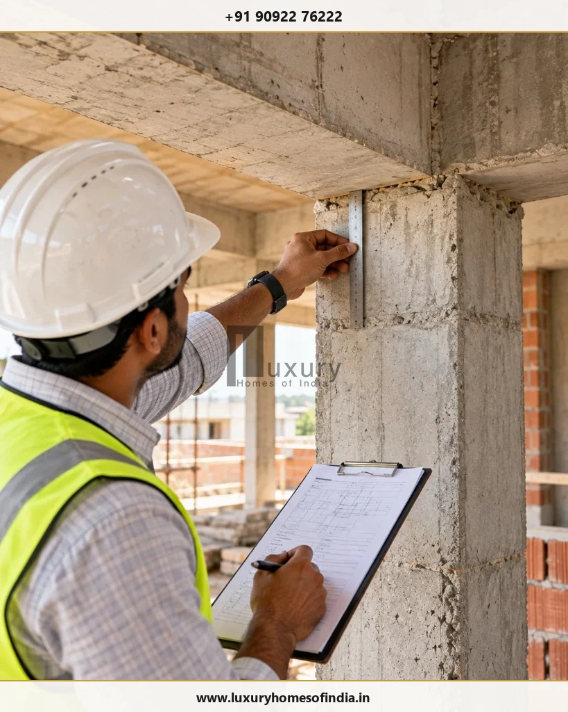
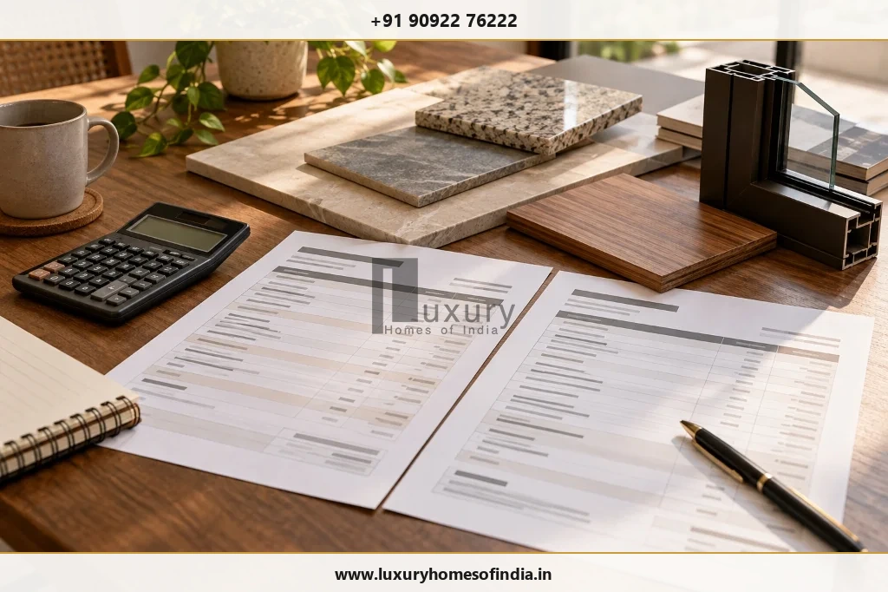
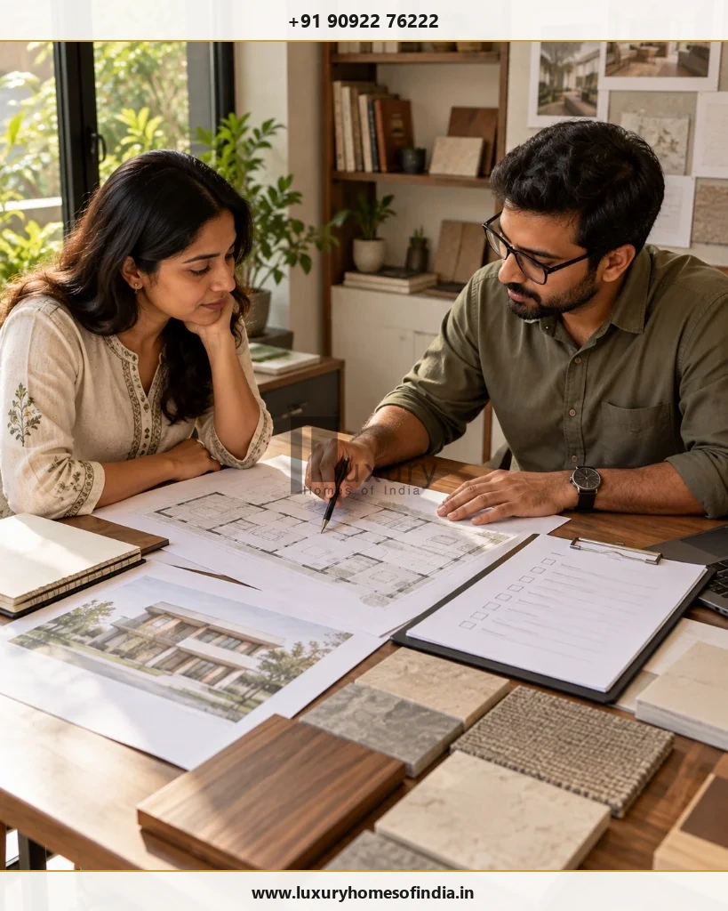

Building a home involves far more than choosing a floor plan or architectural style. It requires decisions about structural engineering, materials, interiors, project costs, construction sequencing and the people responsible for bringing everything together. A design and build company in Chennai can coordinate many of these activities through an integrated arrangement, depending on the services and responsibilities agreed in the contract.
For homeowners planning a bespoke villa or premium independent house, the most important question is not simply which company offers the most services. It is whether the team can translate your requirements into a coordinated design, a clearly defined construction scope and a practical project plan.
This guide explains how design and build works, what to include in a construction quotation, how to compare delivery models, and which questions to ask before appointing a residential construction partner. It also outlines how to evaluate a provider such as Luxury Homes of India (LHI) without relying on marketing promises alone.

Executive Summary: Design & Build in Chennai at a Glance
- Single Contractual Accountability: Architectural design, structural calculations, civil construction, and interior coordination are unified under a single primary contract, eliminating finger-pointing between separate consultants.
- Cost Predictability via Early BOQ: Design choices are directly linked to real-time material pricing and bill of quantities (BOQ) during early conceptual phases, avoiding post-design budget shocks.
- Chennai Climatic & Regulatory Alignment: Coastal humidity, monsoon stormwater drainage, soil bearing capacities (OMR/ECR alluvial vs central Chennai clay), and TNCDBR 2019/CMDA compliance are factored in from day one.
- Contract Scope Transparency: Never sign based on generic lump-sum rates; require an itemised schedule covering architectural deliverables, MEP drawings, civil stages, finish brands, and handover warranties.
1. What Is a Design and Build Company?
A design and build company coordinates architectural design and construction under one delivery arrangement. Depending on its scope, it may also provide or coordinate structural engineering, interior execution, building services, procurement and handover.
In a conventional arrangement, a homeowner might appoint an architect, engage a structural engineer, hire a civil contractor and separately manage interior specialists. In a design-and-build arrangement, these responsibilities can be coordinated through a single primary provider.
Key Legal & Commercial Distinction: The name “design and build” does not automatically mean every service is included. Homeowners must inspect the written contract schedule to see which disciplines are delivered in-house, subcontracted, or completely excluded.
Services to Clarify Before Appointment
Before committing to an agreement, request a written schedule of services that classifies deliverables into included, excluded, provisional, or dependent on third-party approval:
- Architectural design: Comprehensive site planning, vastu/climatic orientation, dimensioned floor plans, 3D exterior elevations, sectional elevations, space allocation, daylight analysis, and material concept mood boards.
- Structural engineering: Site-specific soil investigation review, safe bearing capacity (SBC) calculations, foundation design (isolated, combined, or pile foundation), RCC framing schedules, column-beam detailing, and certified structural construction drawings.
- Civil construction: Site preparation, excavation, anti-termite treatment, foundation RCC, plinth beams, superstructure column casting, masonry (AAC blocks or wire-cut red bricks), lintels, slab casting, water-curing regimes, and internal/external plastering.
- Building services (MEP): Electrical conduit layout, DB schedules, earthing, plumbing piping networks (CPVC/UPVC), hot-water loops, air-conditioning drain/refrigerant routing, pressure testing, and sewage/stormwater connections.
- Interior execution: Premium vitrified or imported Italian marble flooring, false ceiling framing, electrical point placement, custom wood joinery, modular kitchen cabinetry, wardrobe carcasses, bathroom wall cladding, and architectural lighting coordination.
- Project management: Master construction scheduling, critical-path procurement, material testing documentation, daily/weekly site reporting, milestone inspections, and formal variation management.
- Handover: Pre-handover snag checks, acoustic/waterproofing ponding tests, electrical load balancing, defect liability period (DLP) protocol, and delivery of as-built drawings and equipment warranty certificates.
2. Why Consider an Integrated Approach in Chennai?
Chennai homes can range from compact urban houses in central neighbourhoods like Mylapore, T. Nagar, and Anna Nagar to expansive bespoke villas along ECR, OMR, and Kotturpuram. Each project has its own requirements for plot access, daylight, ventilation, drainage, structural design, privacy and material selection.
An integrated team can help coordinate interdependent decisions before they become construction problems on site:
Coordinate Drawings Before Work Begins
Architectural plans, structural drawings and service layouts must be compatible. Early coordination can identify issues such as conflicting ceiling requirements, plumbing routes through structural beams, clash between HVAC ducting and structural lintels, or insufficient space for overhead equipment. When architects and structural engineers work within the same coordinated BIM or CAD model, these discrepancies are resolved digitally rather than chipped away on site.
Connect Design Choices to the Budget
Material specifications, window opening sizes, column-free spans, stone finishes and interior details directly affect the construction scope. Discussing their cost implications during design development gives the homeowner an opportunity to adjust priorities before work proceeds. Under traditional fragmented setups, an architect might design double-height cantilevers and floor-to-ceiling imported glass that exceed the contractor's quotation by 40%, triggering redesign delays and friction.
Establish Clear Communication
A defined single point of contact and an agreed reporting schedule make decisions significantly easier to manage. The contract should clearly identify who approves drawings, who selects material batches, who approves site variations, and who authorises additional expenditure.
Plan for the Actual Site
Soil conditions, plot geometry, access road widths, groundwater salinity, neighbouring party walls and applicable development regulations (TNCDBR 2019) influence design and execution. These factors need project-specific geotechnical and legal investigation rather than generic assumptions.
Summary: An integrated arrangement can dramatically improve technical coordination, but it does not eliminate the need for timely homeowner decisions, qualified registered professionals, or a carefully documented written contract.
3. What to Look for in an LHI Design and Build Proposal
Luxury Homes of India presents its residential offering around turnkey villa construction, architectural design and planning, structural engineering, luxury interior execution and renovation. Homeowners should evaluate the proposed scope for their own project rather than assume that every service is automatically included.

When evaluating a formal proposal from Luxury Homes of India or any design-build firm in Chennai, look for five foundational pillars:
- Architectural design and planning: Discuss the detailed design brief, room requirements, circulation corridors, cross-ventilation, daylight penetration, privacy sightlines, storage utility, and the relationship between indoor courtyards and landscaped gardens. Confirm the number of architectural revisions, 3D render views, and detailed working drawings included in the proposal.
- Structural engineering: Confirm who prepares and signs off the structural drawings (licensed structural engineer under CMDA/GCC rules), how site soil test results dictate foundation depths, and how architectural modifications during construction are vetted against structural load paths.
- Construction execution: Establish the exact construction stages, on-site supervisory presence (degree-qualified civil engineers vs site supervisors), material quality approval workflows, testing records (cube tests, silt tests), and digital progress reporting cadence.
- Interior coordination: Agree on the extent of interior work—such as false ceilings, veneer or laminate joinery, electrical switchgear, imported sanitary fittings, automated lighting, and specialist acoustic glazing. Define brand tiers and clarify whether supply, installation, or both are covered.
- Turnkey handover: Confirm what defines formal project completion, which systems will be commissioned and tested, how snag items will be documented, and what statutory documents, warranty cards, and as-built plans will be delivered.
4. How the Design and Build Process Works
A clear 5-stage sequence helps homeowners understand when key decisions must be made and what technical milestones must be approved before the next phase begins.
Brief & Site Assessment
Plot survey, soil bore tests, FMB verification, zoning setbacks, client brief, budget targets, and architectural direction.
Design Development
Floor plans, 3D elevations, structural analysis, MEP schematic routes, finish selections, and statutory drawing submission.
Scope, BOQ & Programme
Itemised bill of quantities, unit rates, brand specifications, milestone payment schedule, and CPM project timeline.
Construction & Quality
Excavation, RCC frame, masonry, services rough-in, plastering, waterproofing ponding, and finishes under strict QA/QC.
Completion & Handover
Joint snag walk, MEP commissioning, deep clean, as-built documentation, warranty handover, and occupancy sign-off.
Detailed Stage Breakdown
Stage 1: Brief and site assessment: Start with the plot deed, dimensional survey, household lifestyle requirements, intended built-up area (BUA), target budget, and stylistic preferences. The team assesses missing data: geotechnical soil testing, boundary verification against revenue records, existing water table depth, and municipal approval requirements under the Greater Chennai Corporation (GCC) or Chennai Metropolitan Development Authority (CMDA).
Stage 2: Design development: Conceptual sketches evolve into precise CAD working drawings and 3D visualisations. Structural framing (columns, beams, slabs) and building services (plumbing risers, electrical conduits, HVAC piping) are coordinated simultaneously. Confirm how design revisions are managed and establish the baseline drawing set that forms the official Good for Construction (GFC) package.
Stage 3: Scope, estimate and programme: Before ground is broken, review the pricing schedule, itemised inclusions, explicit exclusions, procurement lead times, payment milestone triggers, and the construction timeline. Where appropriate, insist on an itemised Bill of Quantities (BOQ) that breaks down material quantities, labour rates, and brand specifications.
Stage 4: Construction and inspections: Civil execution progresses methodically through excavation, anti-termite treatment, foundation footings, RCC columns and slabs, masonry blockwork, electrical/plumbing rough-ins, waterproof coatings, plastering, and architectural finishes. Maintain digital inspection logs for material gate-passes, concrete cube crushing tests, brick compressive strengths, and waterproof ponding tests.
Stage 5: Completion and handover: Carry out a systematic joint walk-through against the contractual scope. Commission MEP equipment, test pressure lines, verify electrical load balancing, log minor punch-list defects, agree on remediation deadlines, and compile equipment warranties, operation manuals, and as-built drawings into a comprehensive Homeowner Handover Binder.

5. Design and Build Company vs Separate Architect and Contractor
Neither arrangement is automatically superior. The right choice depends on the project's complexity, the professionals involved, and the homeowner's preferred level of personal involvement and commercial control.
| Evaluation Factor | Design and Build Model | Separate Architect & Contractor |
|---|---|---|
| Coordination | Centralises design, engineering, and construction under a single project manager and contract. | Requires homeowner or independent project manager to coordinate separate professionals and resolve site queries. |
| Design Independence | Architect is part of the design-build team; design is optimised for buildability and commercial scope. | Independent architect represents homeowner directly and audits contractor workmanship as a third party. |
| Cost Planning | Construction cost input informs architectural design early; reduces budget overruns and redesign cycles. | Tender pricing occurs after designs are complete; risk of high contractor bids requiring redesign. |
| Accountability | Single point of responsibility for drawing errors, MEP clashes, and site execution delays. | Diffused accountability; architect may blame contractor for poor execution, contractor blames architect's drawings. |
| Flexibility & Changes | Change orders processed within unified commercial terms; changes late in construction require formal variations. | Freedom to replace contractors or tender to multiple bidders; changes involve re-negotiating rates. |
| Homeowner Involvement | Reduces routine daily site coordination; ideal for busy professionals, NRIs, and business owners. | Requires significant weekly time commitment to mediate meetings, verify billings, and resolve conflicts. |
Strategic takeaway: Compare actual written proposals rather than marketing labels. An integrated provider with ambiguous exclusions or unvetted subcontractors offers far less certainty than a well-coordinated team of independent professionals with a clear master agreement.
6. How Much Does Design and Build Construction Cost in Chennai?
There is no universal construction price per square foot for every house or villa in Chennai. Construction cost depends on the built-up area, foundation engineering (e.g., deep pile foundations in coastal sand vs shallow isolated footings in firm gravel), soil conditions, architectural complexity, material specifications, MEP engineering, and interior finishes.
A reliable estimate always starts with a defined brief and an itemised schedule of quantities—never a generic per-square-foot rule of thumb.

Build a Comparable Quotation: Component Scrutiny Matrix
To ensure valid comparisons between competing builders, require every shortlisted firm to price the identical scope across these essential components:
| Cost Component | What to Clarify in the Proposal |
|---|---|
| Design & Engineering | Architectural fees, structural consultant certification, MEP drawings, 3D renderings, revision limits, and soil test fees. |
| Civil & Structural Work | Excavation depth, concrete grade (M20/M25 ready-mix or site-mixed), steel brand (Tata Tiscon/JSW Fe 550D), masonry type, and curing duration. |
| Electrical & Plumbing | Conduit type, wire brand (Finolex/Havells/Polycab), CPVC/UPVC pipe brand (Astral/Ashirvad), sanitaryware supply and fixture installation scope. |
| Windows & Glazing | Window frame material (aluminium system like Schuco/TOSTEM or premium UPVC), glass thickness, acoustic seals, and insect screens. |
| Interior Finishes | Flooring supply rate per sq ft (Italian marble vs porcelain tiles), false ceiling framing, custom joinery, paint specifications (Asian Paints Royale). |
| External Works & Utilities | Compound wall specifications, main gate automation, storm drainage, rain-water harvesting pit, borewell drilling, sump capacity, and paving. |
| Approvals & Statutory Fees | Responsibility for preparing CMDA/GCC planning permission sets, single-window submissions, scrutiny fees, and infrastructure development charges. |
| Changes & Contingencies | Pre-agreed variation unit rates, approval procedure for scope modifications, and clear price escalation clauses. |
Budget Advisory: Never compare two quotations solely by their headline number. A proposal quoting ₹3,200 per sq ft that excludes compound walls, foundation piling, statutory fees, and modular cabinetry is frequently more expensive than an all-inclusive proposal quoting ₹4,200 per sq ft.
7. How to Choose the Right Design and Build Company
Protect your investment by performing rigorous due diligence before signing a residential construction contract in Chennai:
- Review comparable completed work: Request visits to completed luxury villas of similar architectural scale and finishing complexity. Verify that photos and case studies shown in presentations are authentic, proprietary projects rather than internet stock imagery.
- Identify the responsible professionals: Meet the lead architect, licensed structural engineer, and dedicated project engineer assigned to your project. Confirm their professional qualifications, Council of Architecture (CoA) or Institute of Engineers registration, and experience in Chennai's micro-climates.
- Examine the construction scope in detail: Verify whether civil structure, MEP networks, waterproofing warranties, interior joinery, external works, and municipal approvals are contractually guaranteed or left to provisional sums.
- Understand commercial terms & milestones: Insist on a progressive payment schedule tied to verifiable physical construction milestones (e.g., plinth completion, roof slab casting, plastering sign-off) rather than calendar dates.
- Ask how quality is documented: Inspect sample QA/QC field inspection logs, concrete cube compressive test reports from NABL-accredited labs, and digital snagging management software used by the company.
- Agree on communication & reporting: Establish the frequency of progress reporting (weekly photo logs and Gantt chart updates), primary contact person, and escalation matrix for resolving site decisions.
- Review defect liability & handover obligations: Confirm the duration of the Defect Liability Period (DLP)—industry standard is typically 12 months post-handover—and ensure written warranties for structural elements, waterproofing, and anti-termite treatments are provided.
- Speak with past clients: Request contact details for 2 or 3 recent villa clients. Inquire about schedule adherence, budget discipline, responsiveness during snags, and post-handover support.
8. Chennai-Specific Considerations Before Construction
Constructing a high-performance luxury residence in Chennai demands specific technical adaptations to the local coastal environment and regulatory framework:
- Sun and climatic ventilation: Chennai experiences high temperatures and relative humidity for much of the year. Prioritise North-South building orientation, shaded verandas, deep window overhangs (chajjas), double-glazed low-E facades, and internal courtyards that generate natural stack-effect cooling.
- Monsoon rainfall & site drainage: Chennai's intense North-East monsoon (October to December) delivers heavy episodic downpours. Plan roof slopes, rainwater harvesting recharge wells, stormwater bypass gutters, and elevate plinth levels above historical road flood baselines.
- Coastal soil & foundation design: Soil along the East Coast Road (ECR) and Old Mahabalipuram Road (OMR) often comprises deep marine sands or clayey silts with high groundwater tables, demanding anti-corrosive concrete additives, sulphate-resistant cement, and specialized footing designs.
- Logistical & neighbour constraints: Narrow residential access lanes in central Chennai (e.g., Alwarpet, RA Puram) restrict transit mixer trucks and concrete boom pumps, requiring specialised staging plans, sound barriers, and dust control.
- Statutory approval compliance: Verify whether your plot falls under Greater Chennai Corporation (GCC), Chennai Metropolitan Development Authority (CMDA), or DTCP jurisdiction. Ensure compliance with setback, FSI, and plot coverage rules under the Tamil Nadu Combined Development and Building Rules (TNCDBR 2019) before completing construction drawings.
- Material durability against salt air: Marine salinity accelerates corrosion. Specify 316-grade marine stainless steel hardware, powder-coated or anodised aluminium window profiles, elastomeric exterior weatherproofing paints, and water-resistant joinery.
9. Questions to Ask Before Signing
Review this 10-point checklist with every shortlisted design and build contractor before committing your signature and advance deposit:

- Who is legally responsible for each design discipline? (Are architectural and structural drawings stamped and certified by registered professionals?)
- Which exact drawings and specifications will be delivered before construction starts? (Will you receive a full GFC drawing package covering MEP, structural framing, and finish layouts?)
- What construction and external works items are explicitly excluded from this quotation? (Are boundary walls, EB permanent connection charges, borewell, and landscaping included?)
- Is the contract price based on an itemised BOQ, a lump sum, or provisional cost allowances? (What happens if soil conditions necessitate deeper excavation or alternate footings?)
- What is the formal procedure and unit rate for pricing scope variations? (How are homeowner-requested material upgrades or spatial modifications calculated and approved?)
- What are the milestone payment triggers and verification evidence required? (Is each stage payment released only after structural engineer inspection and lab test clearance?)
- What is the baseline project programme, and what weather or supply assumptions are made? (How is the monsoon season or material supply delay factored into completion dates?)
- How are quality inspections, material tests, and site defects documented? (Will you receive regular digital test certificates and progress reports?)
- Who manages municipal building approvals and liaison with statutory bodies? (Does the company coordinate planning permission sets and building license filings?)
- What specific deliverables are required for final handover? (Are as-built drawings, structural stability certificates, waterproofing warranties, and MEP manuals guaranteed?)
Frequently Asked Questions
A design and build company coordinates architectural design and construction through an integrated arrangement under a single primary contract. Depending on the agreed scope, it may also provide structural engineering, interior execution, MEP building services, procurement, quality inspections, and turnkey handover.
Not necessarily. Costs depend on specifications, materials, and risk allocation rather than the delivery model alone. An integrated design and build approach often reduces cost overruns caused by design-construction misalignment, but homeowners should compare identical line-item BOQs, deliverables, exclusions, and statutory fees before drawing conclusions.
Some do directly, while others coordinate registered structural consultants. Always verify in writing who prepares and assumes statutory responsibility for the structural design, soil investigation reports, foundation calculations, and framing drawings, and confirm how drawings are coordinated with on-site execution.
Yes, provided the company possesses proven high-end residential experience and technical capabilities matching your architectural complexity. Review completed custom villas in Chennai, verify the qualifications of in-house architects and project engineers, and examine their contracts and documented quality procedures.
Not automatically. The term 'turnkey' varies widely between contractors. Always confirm the exact interior scope in writing—such as modular cabinetry, false ceilings, lighting layouts, sanitaryware brands, and loose furniture—along with clear supply, installation, and exclusion boundaries.
Project timelines depend on built-up area, architectural complexity, statutory approvals (GCC/CMDA), monsoon periods, material lead times, and interior customization. A bespoke luxury villa of 4,000 to 8,000 sq ft typically takes 14 to 22 months from groundbreaking. Request a project-specific baseline schedule with milestone assumptions.
Prepare the plot location and dimensions, available survey sketches or soil test reports, target built-up area, room requirements, lifestyle preferences, indicative budget range, and desired service scope (core shell vs fully finished turnkey).
Review our residential design and build portfolio on the official Luxury Homes of India website, then connect via our contact page, phone (+91 99622 99000), or email (contact@luxuryhomesofindia.in) with your plot location and spatial requirements for a preliminary consultation.
Conclusion: Choose a Clear Process, Not Just a Promise
A successful home-building project begins with a clear brief and depends on coordinated design, sound engineering, a well-defined construction scope and documented decisions. A design and build company can bring these activities together, provided its responsibilities, exclusions and delivery arrangements are transparent.
Before selecting a partner in Chennai, compare the technical team, relevant project evidence, specifications, commercial terms and handover process. These checks help you assess whether the proposed arrangement fits your priorities.
Luxury Homes of India publishes residential services covering architectural planning, structural engineering, turnkey construction and interior execution. If you are considering a new home or bespoke villa, review the proposed scope carefully and discuss your specific requirements with the team.
Planning a Bespoke Luxury Home in Chennai or Surrounding Districts?
Connect with our senior architectural and project engineering team for a comprehensive project assessment, site analysis, and coordinated design-build roadmap.
Registered Corporate Office: Luxury Homes of India, Level 4, Lotus Tower, Guindy, Chennai, Tamil Nadu 600032
Direct Enquiry Hotline: +91 99622 99000 | Email: contact@luxuryhomesofindia.in
Disclaimer: This article provides general educational information on residential construction delivery models in India and does not constitute formal architectural, structural engineering, financial, or legal advice. Homeowners should verify jurisdictional rules under GCC, CMDA, and TNCDBR 2019 with certified professionals before executing contracts or commencing construction.
Written by: Luxury Homes of India Editorial Team
Technical Review: Coordinated by LHI Senior Civil & Architectural Quality Audit Desk